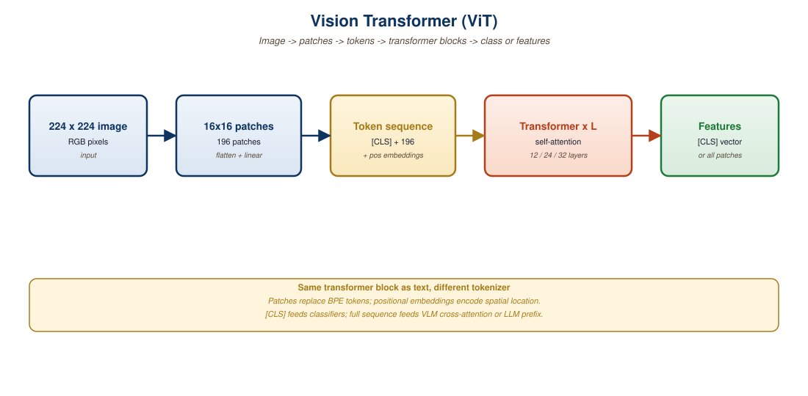

"An image is worth 16x16 words."Dosovitskiy et al., the original ViT paper, 2020
Modern Vision-Language Models are stitched together from two halves: a vision encoder that turns pixels into a sequence of vectors, and a language model that consumes those vectors as if they were token embeddings. The dominant vision encoder, in every frontier VLM as of 2026, is some variant of the Vision Transformer (ViT). This section explains how ViT turns an image into a token sequence (patch embedding, position encoding, class token), traces the lineage from ViT-B/16 through DINOv2, SigLIP-ViT, and the InternViT-6B family, and lays the foundation for the contrastive and generative VLMs that follow.
1. From Pixels to Tokens: The Patch Embedding
The defining move of ViT (Dosovitskiy et al., Google, 2020) was to abandon convolutions entirely and treat an image as a sequence of small fixed-size patches. For a 224x224 RGB image with a patch size of 16x16, the image is partitioned into 14x14 = 196 non-overlapping patches. Each patch is flattened to a 16x16x3 = 768-dimensional vector and linearly projected to the model's hidden dimension (typically 768 for ViT-Base, 1024 for ViT-Large, 1280 for ViT-Huge). The resulting sequence of 196 patch embeddings is then processed by a standard transformer encoder, exactly the same architecture used in BERT for text.
This reframing has two consequences. The first is computational: ViT inherits the quadratic complexity of self-attention in the sequence length. A 224x224 image with 16x16 patches has 196 tokens, which is manageable, but a 1024x1024 image with the same patch size yields 4096 tokens (16x the FLOPs and 256x the memory). This drives much of the design space for VLMs that need to handle high-resolution inputs, as we will see in Section 22.3.
The second consequence is inductive bias. CNNs build in translation equivariance and locality through their architecture; ViTs do not. A patch in the top-left corner has no architectural reason to "know" that it is adjacent to its neighbor. Position encodings (described below) compensate by injecting spatial information through learned embeddings. The practical implication is that ViTs need more training data than equivalently-sized CNNs to reach competitive accuracy, but once trained at scale, they exceed CNN performance on most visual benchmarks.
2. Position Encoding and the Class Token
Two additional ingredients complete the basic ViT input. The first is the position encoding: a learned embedding for each of the 196 patch positions, added element-wise to the patch embeddings. The original ViT used 1D learned position embeddings (treating the 14x14 grid as a flattened sequence), which is sufficient for fixed input resolutions. Subsequent models adopted 2D sinusoidal or 2D learned position embeddings for better generalization across resolutions, and the most recent generation (DINOv2, EVA-CLIP) uses 2D rotary position embeddings (2D-RoPE) for arbitrary input sizes.
The second ingredient is the [CLS] (class) token: a learned vector prepended to the sequence of patch embeddings. After 12 (or 24, or 32) layers of self-attention, the final hidden state at the [CLS] position serves as a global image representation suitable for classification or contrastive matching. This is the direct visual analog of BERT's [CLS] token for text. For dense prediction tasks (segmentation, detection), per-patch embeddings are used instead.

[CLS] token is prepended. The 197-token sequence is processed by a standard transformer encoder.3. Running ViT Inference
The Hugging Face transformers library ships ViT support through the ViTModel class for feature extraction and ViTForImageClassification for pretrained classifier heads. The minimum viable call demonstrates both the input preparation and the structure of the output.
from transformers import ViTImageProcessor, ViTModel
from PIL import Image
import torch
# Load ViT-Base pretrained on ImageNet-21k then fine-tuned on ImageNet-1k
processor = ViTImageProcessor.from_pretrained("google/vit-base-patch16-224")
model = ViTModel.from_pretrained("google/vit-base-patch16-224").eval()
image = Image.open("cat.jpg").convert("RGB")
inputs = processor(image, return_tensors="pt")
print(f"Input pixel tensor shape: {inputs.pixel_values.shape}")
with torch.inference_mode():
outputs = model(**inputs)
# Two key outputs:
# last_hidden_state: [batch, 197, 768] - per-token representations
# pooler_output: [batch, 768] - CLS token after Tanh projection
print(f"Token-level features: {outputs.last_hidden_state.shape}")
print(f"Global image feature: {outputs.pooler_output.shape}")
# The 197 tokens decompose as: 1 CLS + 196 patches (14x14 grid)
cls_feature = outputs.last_hidden_state[:, 0, :]
patch_features = outputs.last_hidden_state[:, 1:, :].reshape(1, 14, 14, 768)
print(f"Reshaped patch grid: {patch_features.shape}")4. The ViT Zoo: Resolution and Patch Size Tradeoffs
Production ViTs come in many sizes. The naming convention is ViT-{S, B, L, H, G}/{8, 14, 16, 32} where the first letter is the model size and the number is the patch size in pixels. ViT-B/16 means base-size (86M parameters) with 16x16 patches; ViT-L/14 means large-size (303M parameters) with 14x14 patches. Smaller patches mean more tokens per image, more FLOPs, and typically better accuracy on dense tasks.
The other axis is input resolution. The original ViT used 224x224; modern VLMs use 336x336 (CLIP variant), 384x384 (TrOCR), 448x448 (Qwen-VL), or arbitrary "any-resolution" inputs via interpolation of the position embeddings. Higher resolution improves performance on tasks requiring small-detail recognition (small text in documents, individual fingers in human poses) at quadratic cost.
| Variant | Params | Patch Size | Resolution | Tokens | FLOPs (forward) |
|---|---|---|---|---|---|
| ViT-S/16 | 22M | 16 | 224 | 197 | 4.6 GFLOPs |
| ViT-B/16 | 86M | 16 | 224 | 197 | 17.6 GFLOPs |
| ViT-L/14 | 303M | 14 | 224 | 257 | 81 GFLOPs |
| ViT-L/14@336 | 303M | 14 | 336 | 577 | 190 GFLOPs |
| ViT-H/14 | 632M | 14 | 224 | 257 | 167 GFLOPs |
| ViT-G/14 | 1.8B | 14 | 224 | 257 | 480 GFLOPs |
| InternViT-6B | 5.9B | 14 | 448 | 1025 | 5.7 TFLOPs |
The most common vision encoder in production VLMs as of 2026 is ViT-L/14 at 336x336 (the version used by CLIP, LLaVA, BLIP-3, and others). The choice represents a sweet spot: 577 tokens per image is enough for dense scenes, 303M parameters fit comfortably alongside a 7B-70B language model, and the CLIP pretraining provides strong zero-shot transfer. Larger encoders (ViT-H, ViT-G) give marginal gains; smaller encoders (ViT-B) cause noticeable accuracy losses on text-in-image tasks.
5. Pretraining Objectives: Supervised vs. Self-Supervised
The pretraining recipe determines what the encoder learns to represent. Four main objectives have shaped the modern ViT landscape.
The first is supervised classification on ImageNet-21k or JFT-300M. The original ViT was pretrained this way, predicting 21,000 or 18,000 class labels respectively. The learned features are excellent for classification transfer but suboptimal for tasks needing fine-grained semantic structure.
The second is masked image modeling (MIM), inspired by masked language modeling in BERT. MAE (He et al., 2021) and BEiT (Bao et al., 2021) randomly mask 75% of input patches and train the model to reconstruct the missing pixels (MAE) or patch tokens from a learned codebook (BEiT). MIM produces strong features for dense prediction (segmentation, detection) and is the dominant pretraining for image-only models, but does not directly produce text-aligned representations.
The third is contrastive image-text learning. CLIP (Radford et al., 2021) and SigLIP (Zhai et al., 2023) train the ViT to produce image embeddings that match corresponding text embeddings in a shared space. This is the dominant pretraining for VLM vision encoders because the resulting features are explicitly language-aligned. We explore CLIP and SigLIP in depth in Section 22.2.
The fourth is self-supervised learning via image-only objectives that produce semantically meaningful features without text. DINO (Caron et al., 2021) and DINOv2 (Oquab et al., 2023) use a teacher-student setup where the model learns to produce consistent representations across augmentations. DINOv2's features are remarkable: they cluster semantic concepts (animals, vehicles, faces) without ever seeing class labels and serve as drop-in replacements for CLIP encoders in some VLMs (notably Idefics-2).
6. DINOv2 and the Shift to Self-Supervised Features
DINOv2 (Meta, 2023) deserves particular attention because it represents a different bet on what makes a good VLM vision encoder. CLIP-style encoders are explicitly text-aligned, which makes them strong on tasks that benefit from linguistic priors (object recognition, scene captioning) but weaker on tasks requiring pure visual reasoning (geometry, motion, dense correspondence). DINOv2's image-only pretraining produces features that excel on geometric and structural tasks but require more downstream alignment for language-grounded use.
The empirical 2025 consensus is that DINOv2 features beat CLIP features on segmentation, depth estimation, and dense correspondence by 8-15% mAP, while CLIP features beat DINOv2 on captioning, retrieval, and zero-shot classification by 5-10% top-1 accuracy. VLMs that need both (multimodal robotic agents, autonomous driving stacks) increasingly use both encoders in parallel.
7. V-NeXT and the Next Generation
The 2025-2026 generation of vision encoders pushes scale further. EVA-CLIP-G (BAAI, 2024) trains a 1B-parameter ViT-G/14 on 5 billion image-text pairs and surpasses CLIP-L/14 on every zero-shot benchmark by 3-8 points. InternViT-6B (Shanghai AI Lab, 2024) is the largest publicly available vision encoder, used in InternVL 1.5 and 2.0 to handle 4K-resolution inputs through dynamic patch sampling. The aggregate trend is captured by the V-NeXT family naming convention (LLaVA-NeXT, MM-NeXT, V-NeXT-T) which signals "next generation" beyond the 2023 baselines.
Two architectural innovations matter most. First, dynamic resolution and tile-based processing: rather than resizing every image to 224x224 or 336x336, modern VLMs partition large images into multiple tiles, process each through the ViT independently, and concatenate the token sequences. This preserves fine detail in high-resolution documents and dense scenes at the cost of longer sequences. Second, register tokens (Darcet et al., 2024): adding learnable tokens that do not correspond to image patches gives the model "scratch space" for cross-attention and reduces artifact tokens that otherwise appear in patch grid outputs.
In 2023, a research team training a 1B-parameter ViT noticed that ten or so patch tokens in every image converged to nearly identical, content-free embeddings, regardless of the image. These "junk tokens" turned out to be the model's emergent solution to having no proper place to store global information: it was hijacking spatially uniform patches (sky, blank backgrounds) as scratchpads. The fix (Darcet et al., 2024) was to add explicit register tokens. Adding 4-8 dedicated registers cleaned up the attention maps, improved dense prediction accuracy by 1-2%, and produced visualizations that finally made sense to humans. The lesson: when a self-attention model behaves oddly, it is often because it has no other choice given the architectural constraints.
8. Key Takeaways
- ViT turns an image into a sequence of patch embeddings (14x14 grid for 224x224 + 16x16 patches) plus a learned
[CLS]token, then runs standard transformer encoder layers. - Token count scales as (resolution/patch_size)^2; FLOPs scale quadratically in token count. This is the dominant constraint on high-resolution VLM design.
- The dominant production variant for VLMs is ViT-L/14@336 (303M params, 577 tokens), pretrained via CLIP contrastive learning.
- DINOv2 self-supervised features beat CLIP on segmentation and dense tasks; CLIP features beat DINOv2 on captioning and classification.
- 2025-2026 innovations include dynamic-resolution tile processing (for 4K inputs) and register tokens (for cleaner attention maps).
- EVA-CLIP-G and InternViT-6B push the frontier to 1B-6B parameter encoders, primarily serving frontier VLMs.
9. Self-Check
- Token arithmetic: Compute the number of input tokens for a ViT-L/14 processing (a) 224x224, (b) 336x336, (c) 1024x1024 images. Explain why option (c) is impractical for most VLM connectors as a single sequence and sketch the tile-based workaround.
- Pretraining choice: You are building a VLM for autonomous driving that needs both excellent semantic recognition ("that's a stop sign") and excellent geometric reasoning ("how far away is it?"). Justify a choice between CLIP-pretrained, DINOv2-pretrained, and dual-encoder architectures, citing what each pretraining objective optimizes for.
- Register tokens: Explain in your own words why a self-attention model with no register tokens might hijack content-free patches as global scratchpads, and predict what the attention maps would look like with and without registers.
10. What's Next
Section 22.2 dives into contrastive vision-language pretraining: how CLIP and SigLIP turn a generic ViT into a text-aligned vision encoder. This is the bedrock pretraining that powers nearly every production VLM, and the contrastive objective itself has interesting properties (zero-shot classification, retrieval, prompt engineering) that make CLIP models useful even outside of full VLM pipelines.
11. Bibliography
- Dosovitskiy, A., Beyer, L., Kolesnikov, A., et al. (2021). An Image is Worth 16x16 Words: Transformers for Image Recognition at Scale. ICLR 2021. arXiv:2010.11929.
- He, K., Chen, X., Xie, S., et al. (2022). Masked Autoencoders Are Scalable Vision Learners (MAE). CVPR 2022. arXiv:2111.06377.
- Oquab, M., Darcet, T., Moutakanni, T., et al. (2024). DINOv2: Learning Robust Visual Features without Supervision. TMLR. arXiv:2304.07193.
- Darcet, T., Oquab, M., Mairal, J., Bojanowski, P. (2024). Vision Transformers Need Registers. ICLR 2024. arXiv:2309.16588.
- Sun, Q., Fang, Y., Wu, L., et al. (2024). EVA-CLIP-18B: Scaling CLIP to 18 Billion Parameters. arXiv:2402.04252.
- Chen, Z., Wang, W., Tian, H., et al. (2024). InternVL: Scaling up Vision Foundation Models. CVPR 2024. arXiv:2312.14238.
- Hugging Face. (2024). Vision Transformer (ViT) Documentation. huggingface.co/docs/transformers/model_doc/vit.